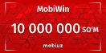

MobiWin 2.0
Katta orzu uchun 500 million so‘m!
Qanday ishtirok etish mumkin:
«Ishtirok etish» tugmasini bosing
Ilovada avtorizatsiyadan o‘ting, aksiya qoidalariga roziligingizni tasdiqlang — va siz o‘yindasiz
Topshiriqlarni bajaring
Ilovada va haftalik hamda bosh sovrinni yutib olish imkoniyati uchun ballarni to‘plang
Qo‘shimcha ballarni oling
Ilovaning yangi bo‘limlarini ko‘rish va ularga o‘tish uchun
Sovrinlar
Oraliq sovrinlar
har biri 5 000 000 so‘mdan
aksiya davomida har hafta o‘ynaladi
Bosh sovrin
500 000 000 so‘m
top-5 finalchilar o‘rtasida o‘ynaladi
Pul mukofotlari
har biri 50 000 000 so‘mdan
qolgan top-4 finalchilar oladilar
Savollar va javoblar
Umumiy reyting esa aksiya davomida to‘plangan barcha ballar yig‘indisini ko‘rsatadi. Umumiy reytingda dastlabki 5 o‘rin bosh mukofot – 500 000 000 so‘m uchun kurashadi.
Siz keyingisi bo‘lishingiz mumkin!
Muxlisa M.
Namangan viloyatidan, o‘z kumiri Shohruhxon bilan kechki ovqatni yutib oldi!
 “Mazali Yangi yil” aksiyasi
“Mazali Yangi yil” aksiyasi
Abbos E.
Surxondaryo viloyatidan BYD Song Plus Champion avtomobilini yutib oldi!
 “MobiWin” aksiyasi
“MobiWin” aksiyasi
Rano K.
Samarqanddan va yana bir nechta g‘oliblar 1 milliondan 10 million so‘mgacha pul mukofotlarini yutib oldilar!
 “50 baxtli ishtirokchi!” aksiyasiGulzoda I.
Navoiy viloyatidan BYD Song Plus Champion avtomobilini yutib oldi!
“MobiDRIVE” aksiyasi
Munisa X.
Navoiy viloyatidan BYD Song Plus Champion avtomobilini yutib oldi!
“MobiDRIVE” aksiyasi
Munisa M.
Navoiy viloyatidan BYD Song Plus Champion avtomobilini yutib oldi!
“MobiDRIVE” aksiyasi